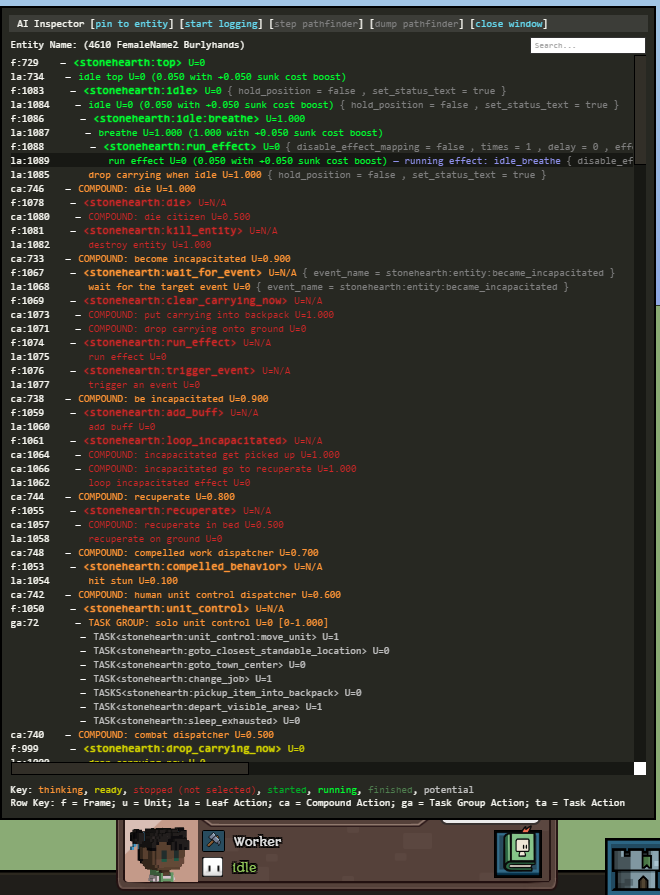
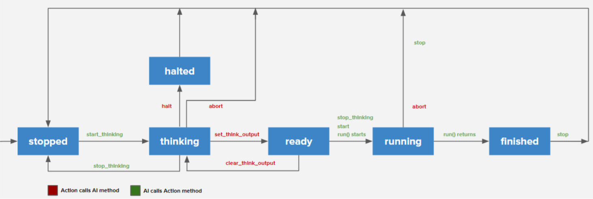

You can find all the information from this page in this PDF.
There's also the old notes about AI in this other PDF. They're still mostly valid, and might help you understand how the AI works with a practical/visual example.
Overview of the AI system
Intelligent entities in Stonehearth run a hierarchical task network to perform activities by making, comparing, and executing plans made up of actions. Many potential plans are typically being considered at a time, most of which are not ready to execute, or are suboptimal, and the AI constantly selects the one best plan to execute at any given time.
Let's unpack that formal definition and map it to the terms used in the implementation:
Intelligent entity -- An entity that has a stonehearth:ai component. This component runs a Lua thread (a coroutine managed by the thread class), which continuously evaluates a tree of plans and executes a branch of it. Intelligent entities include hearthlings, enemy mobs, pets, critters, and even turrets, although the rest of this page uses "character" to refer to any of these entities.
Activity -- A behavior that can have multiple implementations. For example, if "get food" is an activity, "get food from stockpile", "get food from backpack", and "hunt wild animal" may all be implementations of the "get food" activity. Activities are represented as strings, conventionally in the form
mod_name:verb, e.g.stonehearth:get_food. A not-necessarily-up-to-date list of activities can be found instonehearth/ai/activities.lua. An activity can take arguments. E.g. thestonehearth:find_path_to_entityactivity takes the entity to path to as an argument. At its core, all the AI component does is to continuously try to perform thestonehearth:topactivity.Action -- A specific implementation of an activity. In the code we express this by saying that the action "does" the given activity string. An action is responsible for telling the AI system (1) its "utility", i.e. how good it is, (2) how to "think" it, i.e. decide whether it is ready to be executed and what relevant state it expects to change if executed, (3) and how to "run" it, i.e. actually execute it in real time. There are several types of actions:
- Leaf action -- The simplest type of action. A Lua file that has a
run()method that executes the action's logic. E.g.heal_entity_adjacent_action. - Compound action -- An action that is composed of a list of steps, each of which is an activity with optional argument bindings. Executing a compound action involves finding a valid action that performs each step's activity and executing all these actions in order. E.g.
heal_self_actionconsists of (1) getting a healing item (astonehearth:goto_item_made_ofactivity with a material argument set to"healing_item"), (2) reserving that item so other characters don't grab it (astonehearth:reserve_entityactivity with the item selected in the previous step passed as an argument), and finally (3) self-healing with that item (astonehearth:heal_entity_adjacentactivity with the entity itself as the target and the item reserved in the previous step as the item to apply). - Task group action -- An action that runs one of a list of declared tasks (activities). Systems outside the AI control which of these tasks are active at a given time, and task groups allow these systems to ask multiple characters to perform some action. This is the only place where different activities compete with each other, so the task group declaration allows you to remap their utility values or ranges. E.g.
farming_task_groupinvolves tilling (stonehearth:till_entire_field), planting (stonehearth:plant_crop), or harvesting (stonehearth:harvest_field), and specifies how these three activities compete against each other in terms of utility (see "comparing plans" below). - Task action -- An action which runs each task instance in a task group. This is an implementation detail, and there's only one
TaskActionclass, so it can mostly be ignored.
Character behavior is generally configured by the set of actions that they "know", specified through "AI packs", described in more detail later in this guide.
- Leaf action -- The simplest type of action. A Lua file that has a
Making plans -- Deciding whether an action is ready to run. This is called "thinking" in the code. When the AI component wants to perform an activity, it asks all the actions that implement that activity to start thinking. Each action can then (often asynchronously) decide when it is ready to run, and provide "think output" that can be used as input to later steps if this action is performing a part of a sequence (i.e. it's performing a step in a compound action). E.g.
find_path_to_entitystarts an asynchronous pathfinder and when a valid path is found, declares that it's ready with the path as its think output; this path is often passed as an argument to a subsequentfollow_pathactivity). For compound actions, which consist of multiple steps, each of the steps is "think"ed in order, and all of them have to declare themselves ready before the compound action itself is considered ready. It is important to note that actions are not rethinked unless the branch they are in has finished executing (or got aborted), so action writers should not rely on thinking being restarted at any guaranteed time and if the action's validity should change in response to world state, the action should listen to events while thinking and adjust its validity in response.Comparing plans -- Selecting an action to perform an activity from all the available actions. Actions tell the AI system how good they are by announcing their "utility". This can either be a static value that is always the same for all instances of the action, or it can be a range, and the action instance specifies where it is within that range while thinking or running. Note that the selection happens locally for each activity that has more than one implementation, and it happens instantly. All implementations of an activity start thinking at the same time, and do so concurrently (well, asynchronously), and whenever an action becomes ready, if its utility is higher than the currently selected "best" action for the activity, it replaces that action. If an action has been running, its utility gets a "sunk cost" boost to reduce interruptions, but if it's still lower than the newly-ready action, it gets interrupted and the new action starts.
For example,
healing_task_groupperforms thestonehearth:workactivity and has a constant utility of 0.87;crafting_task_groupalso performs thestonehearth:workactivity but has a constant utility of 0.81, because we want healing to be prioritized over crafting. So when a herbalist decides to work, they will start thinking about both healing (by looking for hurt citizens) and crafting (by looking at any available herbalist crafting tasks). If they start crafting but later find a hurt citizen, they will interrupt the crafting task group action, and instead start performing the healing task group.Executing plans -- Calling
run()on the best ready action that performsstonehearth:top. This is almost always a compound action, so executing it involves callingrun()on each action within its sequence, many of which will themselves be compound or task group actions, so eventually it consists of running a sequence of leaf actions in order.
Below is a screenshot of how a typical AI tree looks in the AI inspector. Activities (=frames) are presented in angle brackets. The rest of the nodes are actions. Leaf nodes are Leaf Actions. Inner nodes are compound, task group, or task actions. The root is always the stonehearth:top activity.

Writing actions
Actions are Lua scripts registered in the mod's manifest and "injected" into a character's AI. This section explores how to declare actions. The next section explores how to inject actions into into a character's AI.
Leaf action example
(hypothetical) draw_animal_action.lua
local DrawAnimalAction = class()
DrawAnimalAction.name = 'draw an animal' -- required
DrawAnimalAction.does = 'stonehearth:paint' -- required
DrawAnimalAction.args = { -- required
subject = Entity,
effect_name = {
type = 'string',
default = 'draw_in_notebook',
}
}
DrawAnimalAction.think_output = {}
DrawAnimalAction.priority = {0.2, 0.4} -- required
DrawAnimalAction.sunk_cost_boost = 0.2
DrawAnimalAction.weight = 1
DrawAnimalAction.scheduler_priority = 4
DrawAnimalAction.status_text_key = 'stonehearth:ai.actions.status_text.drawing'
function DrawAnimalAction:start_thinking(ai, entity, args)
if is_animal(args.subject) then
ai:set_utility(get_photogenicity(args.subject))
self._listener = radiant.events.listen(args.subject, 'stonehearth:ready_to_pose',
function()
ai:set_think_output({})
end)
else
ai:reject('not an animal!')
end
end
function DrawAnimalAction:stop_thinking(ai, entity, args)
if self._listener then
self._listener:destroy()
self._listener = nil
end
end
function DrawAnimalAction:start(ai, entity, args)
if not is_ready_to_pose(args.subject)
ai:abort('animal stopped being ready to pose by the time the action started')
end
end
function DrawAnimalAction:run(ai, entity, args)
if not is_ready_to_pose(args.subject)
ai:abort('animal stopped being ready to pose by the time the action ran')
end
freeze_animal(args.subject)
ai:execute('stonehearth:run_effect', {effect = args.effect_name})
radiant.entities.add_thought(entity, 'stonehearth:thoughts:drew_an_animal')
end
function DrawAnimalAction:stop(ai, entity, args)
if is_frozen(args.subject) then
unfreeze_animal(args.subject)
end
end
return DrawAnimalAction
Let's take a look at each part of that action:
-
name -- The name under which the action appears in debugging tools.
does -- The activity that this action performs.
In this case, our action is one way to perform
stonehearth:paint.args -- The argument types to this activity; all actions that perform the same activity must take the same args. If an argument is optional, it should declare a default value. This is often empty.
In this case, we're taking the subject to paint as an argument, which might come from a previous step in a compound action, or from a task, as well as an optional effect name argument, in case we want to play a different animation while drawing.
think_output -- optional. The format of the object passed to
set_think_output(). If no object or an empty object is passed, this doesn't need to be declared.In this case, we have no think output.
priority -- The action's utility, i.e. how good this action is at performing the activity, from 0.0 to 1.0. This can be a number if the action always has the same utility, or a range like {0.2, 0.6} if the action will at some point change its utility depending on state or input by calling
ai:set_utility(). The utility of an action is used to select the best action to perform the activity among the ones that are ready.In this case, we are specifying that we will set the utility dynamically, and that the value which we'll pass to
set_utility()should be remapped linearly to the {0.2, 0.4} range, so 0 will be remapped to 0.2, 0.5 to 0.3, 1.0 to 0.4, etc.sunk_cost_boost -- optional, rare. An override on the amount added to the utility of an action once it has been running for a while. This controls how easy it is to interrupt the action. The default is 0.05. A value of 1.0 means that no action that fulfills the same activity can interrupt it (but a compound action which is running this action as a step can still be interrupted).
In this case, we've specified 0.2, which means that for another painting task to interrupt this, it would have to have a utility more than 0.2 greater than our utility.
weight -- optional, rare. For actions that have the same utility, weights are used to randomize which will run.
In this case, we've specified 1, which is the default, so this does nothing and is just for illustration purposes.
scheduler_priority -- optional, rare. A multiplier on the amount of pathfinding, etc. resources that this entity is allocated while running this action. As of September 2017, this is only used to help idling characters find other actions.
In this case we specified 4, which we had no good reason to do, except to demonstrate the existence of this option.
status_text_key -- optional. An i18n key that is used to look up a user-facing description of this action. This is displayed in the citizens menu to describe what a given character is doing. This can also be set by calling
ai:set_status_text_key()in the action'srun()method.In this case, we specified a key that might translate to "Painting an animal".
-
NOTE: All the methods in the Action interface take the same arguments:
- ai -- An AIContext object used to communicate back to the AI system about the current action.
- entity -- The entity on which the action is thinking or running. Note that every entity that "knows" an action has their own instance of it.
- args -- The arguments that were passed into the activity.
start_thinking() -- When the AI system starts planning an activity (e.g. prompted by a compound or task group action), all actions that perform that activity will receive a call to this method. An action is only considered ready once it calls
ai:set_think_output()(or if it has notstart_thinking()method). This can either happen synchronously whilestart_thinking()is running, or it can happen at a later time as a result of an event - in which casestart_thinking()is the place to start listening for that event.In this case, we look at the subject argument. If it isn't an animal, we immediately reject with an explanation. Otherwise we update our utility based on how photogenic the animal is (so e.g. if there's a draw_landscape_behind_subject action that "does"
stonehearth:paintat constant priority 0.3, only the more photogenic animals will be preferred over the landscape). Next, we set up a listener to wait until the animal is ready to pose, and when it is, we callset_think_output()to mark this action as ready to run.stop_thinking() -- Whenever the AI system decides to stop planning this action, this method is called to clean up any setup done in
start_thinking(), such as destroying event listeners and traces. This happens if the action has successfully finished planning (i.e. it calledset_think_output(), in which case this is called afterstart(), so the action state can be used to avoid cleaning up things needed for running the action), or if the AI decided not to do the action (e.g. if a strictly higher-priority action became ready, or if the AI finished what it was doing and is now restarting all planning). It is guaranteed that if an action received a call tostart_thinking(), it will receive a call tostop_thinking()before any of the other Action interface methods.In this case, we destroy the listener that we created in
start_thinking().should_start_thinking() -- Called before
start_thinking()on each action that performs an activity, and allows the action to decide whether this activity is allowed to run at all. If any action that performs an activity returns false fromshould_start_thinking(), all the actions for this activity are prevented from thinking or running. This is very rarely used, and when it is, usually for specific "filter" actions, that don't do anything themselves, but just block the activity from running in certain situations. For example, to prevent carpenters from building non-wooden structures, we give all characters the generic fabricate_structure action, which doesstonehearth:fabricate_structure, but give only carpenters thefabricate_wooden_structurefilter action, which also doesstonehearth:fabricate_structure. So if the structure is not wooden, the carpenter won't be allowed to start to their regular fabricate action because the filter will return false.In this case, we do not need this method.
start() -- When an action is selected for running, this method is called. Usually, you can do anything you might do here at the beginning of
run(), but it's useful in 2 cases: (1) for compound actions, which themselves do not have arun()method, they can do initialization instart(), and (2) when an action is itself a step in a compound action,start()is called on each action in the sequence before any of therun()methods, so they can do sanity checks there before starting execution (although they would probably need to repeat them inrun(), since time will have passed).In this case we check that the animal hasn't stopped being ready to pose between the time we finished thinking and the time the action actually started.
run() -- This is the method that actually implements what it means to execute this action. Unlike all the other Action methods it can yield/suspend the thread and should not return until the action is finished. The classic example of this in use is the
run_effectaction, which plays an effect (typically an animation) and yields the thread for the duration of the effect, only resuming and returning once the effect has finished. If at some point the action determines that it cannot finish successfully, it can callai:abort(), which will cancel the current plan (stopping all in progress actions) and restart planning from scratch.In this case we repeat the check we had in
start()(which may have been long ago, if this action is a late step within a compound action). Then we freeze the animal, and callai:execute(), which immediately thinks and runs an action that performs a given activity (the thinking must be synchronous, or we hang the character's AI thread while it's thinking). In this case we execute run_effect, which plays the requested animation effect (draw_in_notebook), and once finished resumes the thread and returns control to us. Finally we add a thought about animal drawing, and return, which tells the AI system that we have successfully finished running this action and may proceed to the next step (or finish the current plan, if there are no more steps).stop() -- Whenever the action is stopped, this method is called. This can be by having finished its
run(), being aborted, or being interrupted by a higher utility action. It is guaranteed that if an action received a call tostart(), it will receive a call tostop(). The method should be used to clean up any state or resources set up instart()orrun(). Likestart(), if this action is a step in a compound action, itsstop()method will be called after all the steps have finished running (along with thestop()methods of the other steps, in order).In this case, we unfreeze the animal that we may have frozen during
run().
Here's a simplified diagram of the state machine of an AI action: 
Compound action example
(hypothetical) find_and_paint_subject_action.lua
local FindAndPaintSubjectAction = class()
FindAndPaintSubjectAction.name = 'find and paint subject'
FindAndPaintSubjectAction.does = 'stonehearth:free_time'
FindAndPaintSubjectAction.args = {}
FindAndPaintSubjectAction.priority = {0.3, 0.7}
function FindAndPaintSubjectAction:start_thinking(ai, entity, args)
local traits = entity:get_component('stonehearth:traits')
if traits and traits:has_trait('stonehearth:traits:artist') then
ai:set_utility(0.5)
else
ai:set_utility(0.0)
end
ai:set_think_output()
end
function FindAndPaintSubjectAction:compose_utility(entity, self_utility, child_utilities, current_activity)
return self_utility + child_utilities:get('stonehearth:follow_path') * 0.1 + child_utilities:get('stonehearth:paint') * 0.4
end
local ai = stonehearth.ai
return ai:create_compound_action(FindAndPaintSubjectAction)
:execute('stonehearth:find_willing_painting_subject')
:execute('stonehearth:find_path_to_entity', { destination = ai.PREV.subject })
:execute('stonehearth:follow_path', { path = ai.PREV.path })
:execute('stonehearth:paint', { subject = ai.BACK(3).subject })
return FindAndPaintSubjectAction
Let's take a look at each part of that action:
-
- All the metadata for compound actions is the same as for leaf actions.
-
Compound actions have all the methods that leaf actions have, with 2 exceptions:
Compound actions do not have a
run()method. Theirrun()implicitly consists of callingrun()of each of the steps.Compound actions can declare a
compose_utility()method to derive their utility from the utility of its steps. This method is called whenever the utility of any of the steps changes, or when we transition from one step to another while running. Unlike the other methods, it has a different set of arguments (the entity, the utility of the compound action as set byset_utility(), an access for the utility of the action's steps, and the name of the current activity being run, if any).In this example, this action's utility which we set in
start_thinking()is augmented with the utility of the paint step (which in the Leaf Action example we saw represented the subject's photogenicity), as well as the utility of the path following step (which represents the distance). Perhaps a better way to implement it would have been to have thestonehearth:find_willing_painting_subjectactivity always select the best possible subject and have its utility represent how good of a subject it is.
Note that the compound action's thinking is done before any of the steps', and the steps are asked to think (in order) only after the compound action has successfully finished its thinking. Its
start()happens before any of the steps'start(), and itsstop()happens after all of the steps'stop().In this example, we only use
start_thinking()to make this action much more likely to run if the entity has the hypothetical artist trait.
-
Compound actions declare the steps of which they consist by calling
execute()on the object returned bycreate_compound_action(). Note that this is unrelated to theai:execute()methods mentioned earlier. The steps are activities that will be performed, in order, to run the action. Each step can specify arguments to pass to the activity. The arguments can be regular values, or "placeholders" which are ways to dynamically refer to the context of the running action or to the results of previous steps. As of September 2017, the supported placeholders are:ai.ENTITY -- The entity running the action.
ai.ARGS.foo -- One of the arguments of the compound action, in this case
foo.ai.CALL(fn, ai.XXX, ai, ai.YYY) -- This evaluates all the arguments as placeholders, then calls the function specified in the first argument passing the other arguments, and its return value is the result of this placeholder's evaluation. In this case it will call
fn()with two arguments, the results of evaluatingai.XXXandai.YYYand use its return value as the result.ai.PREV.foo -- One of the fields of the "think output" of the previous step. E.g. in this case, the
foofield of whatever object the previous step passed to itsset_think_output()call.ai.BACK(n).foo -- One of the fields of the "think output" of the nth previous step. E.g. in this case, the
foofield of whatever object the previous step N steps ago.ai.BACK(1)is equivalent toai.PREV.ai.NOT(...) -- Evaluates its argument and negates it. E.g.
ai.NOT(ai.ARGS.foo)is the opposite of whatever the value of thefooargument was when this action started thinking.ai.CURRENT -- The "expected state" of the entity running this action. This one is a bit tricky, and is the fallback for when none of the other placeholders are sufficient for your needs. Any action can write
ai.CURRENTentries (by settingai.CURRENT.foo = value) while they are thinking to represent what they think the state of the entity will be after the action runs, and actions that appear as steps afterwards will get that modified object. This is useful e.g. if a pickup action modifies the expected state of the character's backpack, and later actions want to examine what the character has in their backpack to decide if or how they should run. Here are the supported entries inai.CURRENT:- location -- The X,Y,Z location of the character. Various path following and chasing actions modify this.
- carrying -- The item that the character is carrying.
- storage -- The contents of the character's backpack. Has an
itemsproperty which is a table from entity ID to entity, afullproperty to indicate whether the backpack is full, andadd_itemandremove_itemmethods. - self_reserved -- The objects reserved by preceding
reserve_entityactions, a table from entity ID to entity. - self_region_reserved -- The objects reserved by preceding
reserve_entity_destinationactions, a table from entity ID to a table from offset key to XYZ offset. - location_changed -- A read-only flag indicating if
ai.CURRENT.locationhas changed at any point in the AI branch so far. - carrying_changed -- A read-only flag indicating if
ai.CURRENT.carryinghas changed at any point in the AI branch so far.
Note that the
start()method of each step is run in order before therun()method of the first step is executed, and thestop()method of each step is run in order after therun()method of the last step returns. This means that if, e.g., you're writing a compound action that wants to create a critter, walk the character to the critter, and then destroy the critter, you can call destroy in the stop function of the create action and it will execute only after the walking happens.In this example, our steps are as follows:
- First, find a willing subject to paint.
- Next, find a path to reach that subject. Here we use the placeholders to pass the subject found in the previous step as the destination to find a path to.
- Then, actually follow the path (again, we use placeholders to pass the path found in the previous step to this activity).
- Finally, actually paint the subject (we use the
ai.BACKplaceholder to refer all the way back to the subject found by the first step). This may run thedraw_animalaction described above, or another one that performsstonehearth:paint, e.g.draw_human, ordraw_building, depending on what entity was chosen in the first step, and depending on what the utility of each of those actions are (the highest utility action is always selected).
Task group example
solo_basic_needs_task_group.lua
local SoloBasicNeedsTaskGroup = class()
SoloBasicNeedsTaskGroup.name = 'solo basic needs'
SoloBasicNeedsTaskGroup.does = 'stonehearth:top'
SoloBasicNeedsTaskGroup.priority = {0, 0.3}
return stonehearth.ai:create_task_group(SoloBasicNeedsTaskGroup)
:declare_task('stonehearth:sleep', 0.6)
:declare_multiple_tasks('stonehearth:eat', {0.4, 1.0})
:declare_permanent_task('stonehearth:rest_when_injured', {}, 0.2)
Let's take a look at each part of that action:
-
- All the metadata for task group actions is the same as for leaf actions, except that they cannot have arguments (only due to lack of use case).
-
Task group actions only support one optional method,
compose_utility(), which allows you to have custom logic to derive the utility of the group from the utility of the task that it's considering or running, instead of the default which just remaps the declared task utility (see below) to the range declared for the task group action (if it's a range rather than a static number). Unlike the other methods, it has a different set of arguments (the entity, and the utility of the task).In this case we don't need any custom utility calculation logic, so we do not declare
compose_utility().
-
The purpose of a task groups is two-fold: (1) allow code outside the AI system to control which activities are active at a given time, what arguments they should use, and which characters should perform them; and (2) select the best of a set of possible activities to run. The first purpose is explored later in this page, but the second is what concerns us in the context of AI.
Task groups declare which activities they can run, and whether there can be multiple instances of that activity trying to run (e.g. I might want two "attack target" tasks with different targets that compete). Tasks can be declared by calling methods on the object returned from
create_task_group(). There are 3 variations:declare_task() -- This declares that whoever is managing the task group can create at most one task (at a time) that tries to do the specified activity (with arguments specified at runtime). The first argument is the activity that this task will try to do. The second is the utility of the task. This second argument can be a number, which means that the task ignores the utility of whatever action is doing the activity, and always considers the task to have the specified utility value in the context of the task group. Alternatively, it can be a range like {0.2, 0.7}, which means that the utility of the action performing the requested activity is linearly remapped from its 0 to 1 range to the specified range.
Keep in mind that these task utility declarations are in the context of the task group action, which means that they are used to select which of the tasks within the task group to do. The utility of the task group itself in the context of its activity (the "does" it declares in its metadata) is computed from this task utility by remapping it again to the range specified in the task group's metadata (passing it through
compose_utility()if that is declared).declare_multiple_tasks() -- This is similar to
declare_task(), except it allows many instances of the same task to be created (potentially with different arguments).declare_permanent_task() -- This is similar to
declare_task(), except it takes a set of arguments, and creates that task as soon as the task group is created, rather than waiting for some external code to create that task.
In this example, we are declaring a "basic needs" task group that handles a hearthling's eating, sleeping, and recovery tasks. (Note that this is the earliest, simplest version of this task group, and will probably not be what we the game is using by the time you read this).
- We declare a
stonehearth:sleeptask, with a constant utility of 0.6. This means that some external system (in this case, thesleepiness_observer) will at some point ask the AI to start considering sleeping. We are also saying that we do not care about the utility of the action that performs the sleep activity, and will always consider that task to have the utility of 0.6, relative to sleeping and recovery. Remember that the utility of the task group itself is the utility of the task, remapped to the task group's declared utility range. So since this task has a constant utility of 0.6, and the task group declares its utility range to be {0, 0.3}, if the sleep task is selected, the utility of the task group is 0 + (0.6 * (0.3 - 0)) = 0.18. - We declare a
stonehearth:eattask, with a utility range of {0.4, 1.0}, and allow multiple eat tasks to be created by some external system (in this case, the consumption component). Since we specified a utility range, we will use the utility of the action that performsstonehearth:eat, and remap it to this range. So if our eat action says that its utility is 0.7 (e.g. based on hunger or food quality), the utility of the task is 0.4 + (0.7 * (1.0 - 0.4)) = 0.82, when compared to sleeping, recovering, and other eat tasks within the group. If that task is selected, the utility of the task group would be 0 + (0.82 * (0.3 - 0)) = 0.246. - We declare a permanent
stonehearth:rest_when_injuredtask, with an empty argument list, and a utility of 0.2. This means that a character that has this task group will always have this task, and its utility will always be 0.2 relative to eating, sleeping, and recovery, making it the least important. If that task is selected, the utility of the task group would be 0 + (0.2 * (0.3 - 0)) = 0.06.
- We declare a
AI contexts
All Action methods get passed an "AI Context" as described above, which is used to communicate with the AI system about that action. Here are the methods available on AI Contexts:
-
- set_think_output() -- Must be called while the action is thinking to mark the action as ready, and set the "think output" of the action, which is a table that any following steps in a compound action sequence can access. An example would be the
find_path_to_entityaction setting the calculated path as "think output", so that it can be used together with thefollow_pathaction within a compound action step sequence. If no argument is passed toset_think_output(), the think output defaults to the action's original arguments. Note that it is not valid to callset_think_output()in any state other than thinking (e.g. when already ready). - clear_think_output() -- Reverts the effect of
set_think_output(). Use this to mark an action as no longer ready, returning it to the thinking state. - set_utility() -- Updates the action's utility. Takes a number between 0 and 1, linearly remaps it to the action's declared utility range, and sets the action's utility to that. This can be called both when thinking and when running, but the action must have declared a utility range rather than a static utility value.
- abort() -- Used to announce that the action has gotten into an unrecoverable state, typically while running. E.g. it was running to an item and that item has since been destroyed. This forces the AI to cancel the current action, and recalculate a new plan from scratch. This should only be used in extreme situations, since it can force the character to stutter or rapidly switch plans as it reconsiders everything from scratch. If the AI keeps selecting an action and it keeps aborting, it will eventually (currently after 10 consecutive aborts) give up and kill the character's AI thread. This method takes a string explaining the reason for the cancellation, which is surfaced in the AI inspector and in error messages.
- execute() -- Immediately thinks and runs an action that performs a given activity (the thinking must be synchronous, or we hang the character's AI thread while it's thinking). In general, if you find yourself using this, consider whether your action should be a compound action with this as a step. That allows thinking to be asynchronous and also makes the activity to be executed show up in the AI inspector even when the action isn't running.
- set_think_output() -- Must be called while the action is thinking to mark the action as ready, and set the "think output" of the action, which is a table that any following steps in a compound action sequence can access. An example would be the
-
- set_status_text_key() -- Sets an i18n key and arguments that is used to look up and render a user-facing description of this action, which is displayed in the citizens menu to describe what a given character is doing. This should only be used if you need to change the text dynamically or pass arguments. Otherwise just declare it as the
status_text_keymetadata field. - reject() -- Signals that the action received arguments which are no longer valid. This one is tricky! If all actions that perform a given activity reject, and the activity is part of a compound action, that compound action will (after a 20ms delay) rethink itself. This means that
reject()should only be called if the caller expects to be a step in a compound action rethinking which will now choose different arguments. The classic example of this is thereserve_entityaction - if its target has already been reserved by the time it starts thinking, it rejects to ask the parent action to re-evaluate the choice of entities (it assumes that they will check reservations). On the other hand, if you callreject()when rethinking its parent action does not change its arguments, this will cause an infinite loop of rejecting, rethinking, rejecting, and so on, so this is dangerous and highly context-sensitive. - suspend() -- Pauses the entity's AI thread until resumed, and can only be called while running. Used almost exclusively to wait on an effect in actions like
run_effect. If you suspend the AI thread, you must later callresume()from the same action (on another thread; typically within a callback); otherwise the thread may hang forever. - resume() -- Resumes the AI thread. Should only be called while running, if this same action previously called
suspend(). - protect_argument() -- Marks an entity as protected. If that entity is destroyed while this action is thinking, its thinking is canceled. By default, all arguments passed to the action are protected, so this is only useful if you need to protect some other entities relevant to your action.
- unprotect_argument() -- Undoes the protection set by
protect_argument(), meaning that destroying the given entity no longer stops the action thinking. This is used e.g. if you need to destroy an entity passed as an argument to the action (or previously protected) as part of your action.
- set_status_text_key() -- Sets an i18n key and arguments that is used to look up and render a user-facing description of this action, which is displayed in the citizens menu to describe what a given character is doing. This should only be used if you need to change the text dynamically or pass arguments. Otherwise just declare it as the
-
- set_debug_progress() -- Sets a string to show in the AI inspector describing what the current state of the action is. E.g. a "find item" action can show what item it selected.
- get_log() -- Returns a (created on demand) logger configured to print extra context info about this action (entity and debug route). This is just a shortcut.
- get_debug_info_datastore() -- Returns a datastore that contains debugging metadata about this action. Can be used to add your own debugging metadata, but should generally be avoided.
-
- spawn(): Creates a new execution frame that manages thinking and running a given activity. The caller is responsible to managing the returned frame, calling its methods at the right time, etc. This is only used to implement low-level AI system features and is not generally useful.
- get_parent_node(): Returns the parent node of this action in the AI graph, which may be an action, an execution frame, or an AI context. This is only used to implement low-level AI system features and is not generally useful.
Utility
When deciding which action to select to perform a given activity or task group, the actions are judged by comparing their utility, a value between 0 and 1, which represents how good that action is at performing its activity in the current situation.
Actions can specify their utility as a number if the action always has the same utility, or as a range like {0.2, 0.6} if the action will at some point change its utility depending on state or input. In the latter case, the minimum is assumed by default, and the action can adjust it while thinking or running by calling ai:set_utility() with a number from 0 to 1 (which will be rescaled to the declared range), or for compound and task group actions by returning the new utility value from their compose_utility() method as explained above.
Note that an action's utility value is only meaningful in the context of its activity. The utility values of actions that perform different activities cannot be compared directly.
In addition to the utility that the action reports, we also have a "sunk cost boost" feature, which increases the utility of an action after it has run for some time. By default, it takes the game time equivalent of 500ms of real time before it kicks in, and by default it adds 0.05 utility, though the latter number can be overridden by the action's metadata.
Injecting actions
Even after an action is written and registered in the manifest in the "aliases" section, it is of no use if no character in the game "knows" that action. For a character to "know" an action, it has to be injected into their AI using an AI pack. AI packs are JSON files, usually under stonehearth/ai/packs, which have "type" : "ai_pack" and contain lists of:
Actions, which have been explained above, and components.
Observers, which are component-like objects that are typically used to create tasks when some conditions are satisfied, and are mostly being phased out in favor of the actions themselves waiting for conditions during their thinking.
You can see an example of actions, observers and components in
pet_collar.json, see link below.Personal task groups, which are task group actions for groups that only contain this character. The above basic needs task group is an example of this. See below for more on task groups. The syntax would be like this (example from
celebration_ai_pack.json):"task_groups": [ "stonehearth:task_groups:solo:celebration", "stonehearth:task_groups:solo:building_celebration", "stonehearth:task_groups:solo:unit_control" ]References to other AI packs which they require as dependencies. These are traversed recursively.
Sometimes the AI Packs are inlined in other JSON files instead of being referenced.
Entities inject AI packs in several different ways:
An entity can specify a list of AI packs under
stonehearth:ai_packsin their entity_data. E.g. inbase_human.json, the base mixin for hearthlings.Items with an equipment_piece component can include an inlined AI pack under
injected_ai. E.g. inpet_collar.json, an item given to all pets, we have this injected AI.Jobs also use this path by having an "abilities" item given to characters that gain the job. E.g. in
trapper_abilities.json.Buffs can contain an inlined AI pack under
injected_ai. E.g. insnared_buff.json, the debuff applied by snare abilities.
So after you create an action, you should add it to an AI pack and make sure the characters who should know this action have that AI pack injected somewhere.
Tasks
While the simplest way to get a character to perform some behavior is to create an action, add it to an AI pack, and have it fulfill the top level activity, stonehearth:top, that does have a few limitations:
- The action will always be considered as an option.
- Actions always run independently on every character that knows that action.
- It's impossible to assign behaviors to people who aren't in the game yet (for them to do as soon as they enter the game).
Tasks are how you surpass these limitations. A task is a structure that schedules an activity; think of it as a personal assistant whose sole job is to nag someone (or a group of someones) to do something.
In order to match tasks up with people, we house tasks inside Task Groups. A task group instance contains a set of pending tasks, and a set of people to give those tasks to. Each task belongs to exactly one task group, while each character can belong to any number of task groups. When a character is added to a task group, its Task Group Action is injected into their AI. When a new task is created, the Task Action is injected into the AI of every character belonging to the group, and runs under the group's Task Group Action.
Personal task groups
Each character can (and usually does) have "personal" task groups that only include the character themself. For example, this is used to issue basic need tasks (eating / sleeping / recovery) as shown above, or to issue move orders to military units. By convention, task groups that are intended to be personal are prefixed with "solo".
Personal task groups are declared in AI packs, as described above, and are accessed from the stonehearth:ai component via its get_task_group() method.
Town task groups
In addition to personal task groups, there are task groups managed by the town, which potentially include multiple characters. Building and farming task groups are examples of this. Other systems can get these task groups from the town and issue tasks in them. These task groups are declared in a task groups JSON file (e.g. player_task_groups.json) and referenced in the population faction JSON (e.g. ascendancy_population.json). Characters are added to these task groups if their job description specifies the group under task_groups (e.g. farmer_description.json).
Ad hoc task groups
Certain systems create temporary task groups to dispatch tasks to temporary groupings of hearthlings. An example for this is combat parties, which creates a task group to dispatch commands to everyone in the party.
Issuing tasks
Systems that want to issue tasks need to get the task group (a personal one from the AI component, a town one from Town, or an ad hoc one created elsewhere), then call create_task(), passing the activity and arguments. Only activities declared by that task group action (as described earlier in this page) are allowed, and if the task group does not declare the task as a "multiple", only one instance of the task can be issued at a time. When a task is created, it starts off in a paused state, and the caller can configure it before calling start(), which dispatches it to the characters belonging to its group. Configuration methods include:
- times(n) -- Specifies that the task should be finished this many times before being considered done. By default, tasks will continue being performed indefinitely.
- once() -- A shorthand for times(1).
- set_annotation(text) -- Specifies text associated with the task for debugging.
- set_source(object) -- Specifies an object considered the source of the task for debugging.
- notify_completed(cb), notify_interrupted(cb), notify_destroyed(cb) -- Adds a callback for when the task is completed, interrupted, or destroyed, respectively.
Tasks can be added to task groups at any time, even when the task group doesn't have people in it yet.
For example, the shepherd pasture component will create a task for all shepherds in the town to feed animals when the animals become hungry. From shepherd_pasture_component.lua:
local feed_task = town:get_task_group('stonehearth:task_groups:herding')
:create_task('stonehearth:feed_pasture_animals', {pasture = self._entity})
:set_source(self._entity)
:start()
Remember to declare your task groups in the "aliases" sections of your manifest.
Persistence
None of the AI state is persisted into savegames, which means several things, including:
- Characters will not resume what they were doing when you reload a savegame.
- If an AI thread got into a bad state, it will be reset on reload (good for playing, bad for debugging).
- When reloading, you are responsible for recreating any tasks that were active when the game was saved.